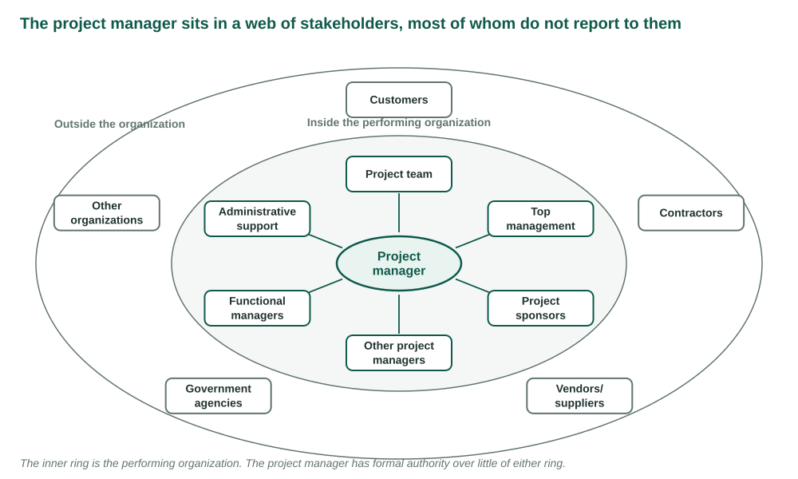
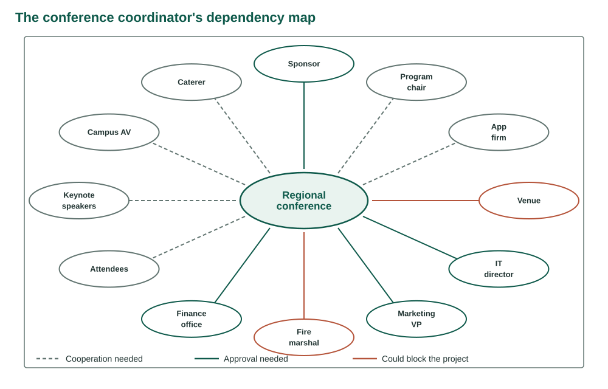
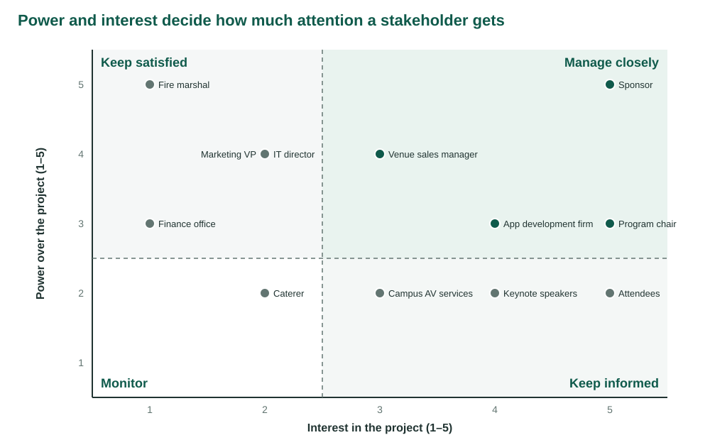
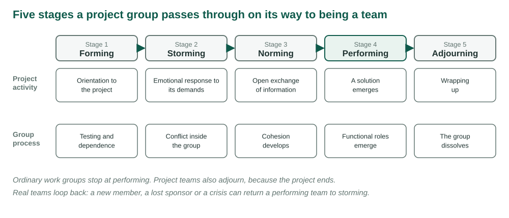
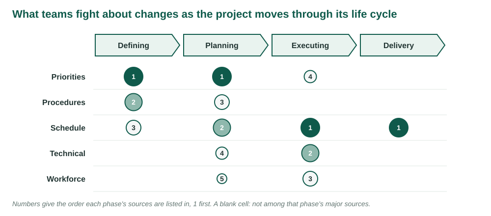

Week 13 · Being an Effective Project Manager · Managing Project Teams
Recording — posts after the session.
Source. This week’s notes follow Larson & Gray, Project Management: The Managerial Process, 2024 Release, McGraw Hill, Chapters 10 and 11 [1]. The exposition is reworded. The chapters supply the distinction between managing and leading, the stakeholder groups and what each needs, the influence currencies, stakeholder mapping, management by wandering around, managing upward, leading by example, the ethics discussion and the qualities of an effective project manager. They also supply the characteristics of high-performing teams, the five-stage model, the situational factors, the team-building practices, the treatment of conflict, the guidance for virtual teams and the team pitfalls. The currencies table under LO 10-3 adapts the chapter’s Table 10.1, itself adapted from Cohen and Bradford [3]. Figures 1, 4 and 5 are redrawn from the chapter’s Figures 10.1, 11.1 and 11.5. Figure 2 follows the layout of Figure 10.2 with the conference’s stakeholders. The power/interest grid is the one the chapter borrows from Chapter 3 [1, 4]. The conference’s stakeholder register, the case and the practice problems are original to these course materials.
Learning objectives
| LO 10-1 | Understand the difference between managing and leading a project. |
| LO 10-2 | Understand the need to engage project stakeholders. |
| LO 10-3 | Identify and apply different “influence currencies” to build positive relations with others. |
| LO 10-4 | Create a stakeholder map and develop strategies for managing project dependencies. |
| LO 10-5 | Understand the need for a highly interactive management style on projects. |
| LO 10-6 | More effectively manage project expectations. |
| LO 10-7 | Develop strategies for managing upward relations. |
| LO 10-8 | Understand the importance of building trust and acting in an ethical manner while working on a project. |
| LO 10-9 | Identify the qualities of an effective project manager. |
| LO 11-1 | Identify key characteristics of a high-performance project team. |
| LO 11-2 | Distinguish the different stages of team development. |
| LO 11-3 | Understand the impact situational factors have on project team development. |
| LO 11-4 | Identify strategies for developing a high-performance project team. |
| LO 11-5 | Distinguish functional conflict from dysfunctional conflict, and describe strategies for encouraging functional conflict and discouraging dysfunctional conflict. |
| LO 11-6 | Understand the challenges of managing virtual project teams. |
| LO 11-7 | Recognize the different pitfalls that can occur in a project team. |
Concepts introduced
management vs leadershipstakeholderlaw of reciprocityinfluence currenciesstakeholder mappower/interest gridMBWAmanaging upwardleading by exampleethical dilemmahigh-performance teamforming · storming · norming · performing · adjourningcommunication channelskick-off meetingground rulesteam chartershared visiongroup rewardsconsensusfunctional conflictdysfunctional conflictdevil’s advocatevirtual, mixed and hybrid teamsgroupthinkgoing local
Weeks 4 to 12 built the conference’s plan and measured it: scope, network, estimates, schedule, budget, risk, earned value and the app’s sprints. None of it gets done by the plan. It gets done by people, and most of the people a project depends on do not work for its manager. This week is about them. Chapter 10 covers the network around the project, and Chapter 11 covers the team inside it.
Part 1 · Being an effective project manager
LO 10-1 · Managing versus leading
Following Larson & Gray, Ch. 10 [1]; the distinction is Kotter’s [2].
If plans held, a project manager would only need to administer one: set the schedule, staff it, track it, say what comes next. Plans do not hold. People fall out, other departments miss their commitments, the technology misbehaves, and work runs long. Much of the job is getting back on plan: expediting, solving problems, keeping the peace and trading off time, cost and scope. Some of it is changing the plan, because a customer’s need moved, a competitor shipped first or the team itself has stopped working.
Kotter separates those two jobs [2]:
| Management copes with complexity | Leadership copes with change |
|---|---|
| Plans and sets objectives | Sees and says that the direction has to change |
| Designs structures and procedures | Aligns people behind the new direction |
| Monitors results against the plan | Motivates them through the obstacles the change creates |
| Corrects deviations | Sets new objectives |
How much leadership a project needs depends on how much it changes. A well-understood, surprise-free project such as a standard apartment block can be run almost purely as administration. The more the scope moves, the technology stalls or coordination breaks down, the more the project needs someone who can redirect it. Few people are strong at both jobs. A visionary can cover the details with a disciplined deputy, and an organizer can cover the direction with someone who reads change well. The project manager who can do both is the valuable one, and both jobs run through the same thing: a network of people who will cooperate [1].
LO 10-2 · Engaging project stakeholders
Following Larson & Gray, Ch. 10 [1].
New project managers expect to manage their own team. They find instead that they spend their days negotiating with vendors, consultants, specialists and other managers, people who do not report to them but have a stake in the outcome. The tempting response is to push harder and get more involved in the detail. That earns a reputation for micromanaging and still does not produce cooperation, because authority is not influence [1].
A stakeholder is anyone actively involved in a project, or whose interests the project can help or harm [1]. The sheer number and variety of stakeholders is what separates project management from running a department.

| Stakeholder | What they bring | What they also care about |
|---|---|---|
| Project team | Does the work | Their other commitments; what the project does for their careers |
| Other project managers | Shared resources and information | Competing with you for the same people and the same executive attention |
| Administrative support (HR, IT, purchasing, maintenance) | Services the project cannot run without | Rules and paperwork the project must follow |
| Functional managers | Staff, technical rulings, sometimes whole work packages; acceptance of in-house deliverables | Their own operations and standing; they cooperate up to a point |
| Top management | Funding, priorities, the definition of success, approval of major changes | What is best for the whole organization, not your project |
| Sponsors | Advocacy and protection; their reputation rides on the project | Being told early about anything that could embarrass them |
| Contractors | Some or all of the work | Their margin and their other clients |
| Government agencies | Permits, codes, approvals | Compliance |
| Vendors and suppliers | Materials and services | Delays, shortages and poor quality on their side stop your work |
| Other organizations | Pressure from outside: interest groups, consultants and auditors | Their own agenda |
| Customers | The scope, and the final verdict on success | Getting a good deal, which puts them in tension with you |
These relationships interact. Functional managers cooperate less when they sense top management losing interest. A project manager who shields the team from an overbearing client gains standing with the team. Structure matters too. Week 3’s dedicated team pulls most resources inside the project and cuts these dependencies. A functional matrix leaves the project manager relying on functional colleagues for both people and work [1].
The older view of project management stressed planning and directing the team. The current view puts engaging stakeholders and anticipating change first, and the manager has to do it without the authority to demand cooperation [1].
LO 10-3 · Influence currencies
Following Larson & Gray, Ch. 10 [1], who draw on Cohen and Bradford [3].
Cooperation without authority runs on reciprocity. People help those who have helped them and remember those who have not [1]. You get resources and services from others by giving them something they value, now or later.
Cohen and Bradford call the things exchanged currencies [3]. A traveller has to pay in the local currency, and exchange rates move. In the same way, a marketing manager and a veteran engineer value different things, and what works with one will not buy anything from the other. The metaphor is simplified, but its central claim holds. Over time, each side’s account has to balance, or the relationship stops working.
| Family | Currency | What you offer |
|---|---|---|
| Task | Resources | Money, budget, people |
| Assistance | Help with their work, or taking on a job they do not want | |
| Cooperation | Support, faster responses, help putting something in place | |
| Information | Organizational and technical knowledge | |
| Position | Advancement | Work that can lead to promotion |
| Recognition | Acknowledging their effort, results or ability | |
| Visibility | A chance to be seen by senior people | |
| Network/contacts | Introductions to others | |
| Inspiration | Vision | A part in something that matters to the organization, its customers or society |
| Excellence | A chance to do important work really well | |
| Ethical correctness | Doing what is right, not only what is efficient | |
| Relationship | Acceptance | Closeness and friendship |
| Personal support | Personal and emotional backing | |
| Understanding | Listening to their concerns | |
| Personal | Challenge/learning | Work that builds their skills |
| Ownership/involvement | Influence and ownership of the result | |
| Gratitude | Thanks |
Two consequences follow. First, you need to know what each stakeholder values before you need something from them. Second, most of your currency is not money. A project manager with no budget authority can still offer information, visibility, recognition, interesting work and thanks.
LO 10-4 · Mapping stakeholder dependencies
Following Larson & Gray, Ch. 10 [1]; the power/interest grid is the one the chapter takes from its Chapter 3 [1], after Mendelow [4].
Building the network starts with finding who the project depends on. Ask three questions [1]:
- Whose cooperation will we need?
- Whose agreement or approval will we need?
- Whose opposition could stop us?
Then draw the answers. The conference coordinator’s map:

When in doubt, put someone on the map. The chapter is blunt that capable managers are derailed far more often by a stakeholder whose power they did not see coming than by one they over-prepared for [1].
Not every name on the map deserves the same attention. Score each one on power over the project and interest in it, and the grid sorts them into four strategies:

| Low interest | High interest | |
|---|---|---|
| High power | Keep satisfied. Meet their requirements, keep them out of surprises, and don’t flood them with detail | Manage closely. Engage them early and often; they can make or break the project |
| Low power | Monitor. Watch for changes in their position | Keep informed. Tell them what is happening; they are often your early warning |
The high-power, low-interest corner is the one to watch. Those stakeholders are easy to forget because they rarely ask about the project, and they are the ones who can stop it. For the most significant stakeholders, step into their shoes [1]:
- How do they differ from you: goals, values, pressures, working style, risks?
- Do they see the project as supporters, as indifferent, or as antagonists?
- How is your relationship with them right now?
- What sources of influence, which currencies, do you have with them?
Your turn: score the conference network
Download the conference stakeholder register. It holds the coordinator’s twelve stakeholders with their group, what the project needs from them, power and interest scores from 1 to 5, stance, the currency the coordinator thinks they value, and the current relationship. Work these by hand or in any spreadsheet before Tuesday’s class:
- Put each stakeholder in a quadrant, splitting power and interest at 3 (3 and above is high). How many fall in each quadrant?
- Rank the stakeholders by power × interest. Which three come first?
- Two stakeholders could block the conference. Which quadrant is each in? Which one is the coordinator more likely to neglect, and why?
- Pick the IT director. Answer the four step-into-their-shoes questions from the IT director’s side, and name one currency from the currencies table under LO 10-3 that the coordinator could offer that costs no budget.
LO 10-5 · Management by wandering around
Following Larson & Gray, Ch. 10 [1].
Project management is a contact sport. Once you know who the players are, you go and build relationships with them. Hewlett-Packard’s name for the style was management by wandering around (MBWA): managers spend most of their time out of their offices, talking face to face [1]. The wandering has a purpose. It keeps the manager in touch with what is actually happening, lets them see problems coming, encourage people, repeat the project’s goals, and step into conflicts before they set hard. It also makes the manager the place people go for current information, which reinforces the role.
The opposite is the manager who stays at the desk with an open door and waits for problems to arrive. No news is taken as good news. Attention then goes to whoever is pushiest, while the quiet and the remote are ignored, and the team learns that only the squeaky wheel gets oiled [1].
LO 10-6 · Managing expectations
Following Larson & Gray, Ch. 10 [1].
The same contact habit extends to distant stakeholders: suppliers, vendors, top management and other functional managers. Regular contact keeps relationships warm, turns up chances to do favours (currency banked for later), and shows what the other side needs. It is also how a manager shapes expectations: reminding people of their commitments, putting rumours to rest, warning early of trouble, and preparing the ground so a setback lands softly [1].
LO 10-7 · Managing upward relations
Following Larson & Gray, Ch. 10 [1].
Top management support shows up as an adequate budget, quick response to unexpected needs, and a clear signal to everyone else that the project matters and deserves cooperation. It also shapes the team. Team members judge a project manager by whether they can defend the project: get unreasonable demands withdrawn, win extra resources, and get the team’s work recognised [1].
Most friction between project managers and executives is a difference of perspective, not of substance. To the project manager, the project is the most important thing in the world. To top management it is one of many, and their job is the whole organization. A request for more staff that is refused because other departments cannot spare people is not hostility. It is the job [1]. Two practices follow:
- Earn loyalty before asking for exceptions. Follow through on requests and work within the limits set, without a running complaint. Executives listen to challenges from managers who have shown they can be relied on [1].
- Keep the sponsor first to know. Sponsors championed the project and defend it in rooms you are not in. If costs start to outrun the budget or a technical problem threatens the date, the sponsor hears it from you, before anyone else [1].
Leading by example
The team reads a project manager’s behaviour more closely than their words. The chapter names six areas where example sets the norm [1]:
| Area | What the team learns from watching |
|---|---|
| Priorities | Where you spend your time, and what you keep asking about, says what matters |
| Urgency | Deadlines and frequent status meetings set a beat only if your own pace matches it |
| Problem solving | Meet bad news with blame, and people hide it; meet it with “what do we learn?”, and they surface it |
| Cooperation | The way you talk about other departments becomes the team’s view of them |
| Standards of performance | Your own work sets the quality bar the team aims for |
| Ethics | What you do under pressure shows the team what is actually allowed |
LO 10-8 · Trust and ethics
Following Larson & Gray, Ch. 10 [1].
Influence without authority depends on trust, and trust does not survive a manager whose word cannot be relied on. Earlier weeks touched ethics already: optimism bias in project selection in Week 2, padded estimates in Week 5. An ethical dilemma is a situation where it is hard to tell whether the right course is right [1].
In one survey, 81 percent of project managers said they meet ethical issues at work: pressure to alter status reports, backdate signatures, cut safety corners to gain time, or accept poor work [1]. Müller and colleagues found that the most common dilemma concerns transparency about performance. Is it acceptable to tell a customer everything is on track, untruthfully, to stop them panicking and making things worse [1]?
Much of this is grey. An honest estimating error and a deliberately low estimate look alike. So do optimism and exaggeration, and a broken promise can come from deceit or from changed circumstances. Codes of conduct help at the margin. In practice most project managers steer by an internal compass, and a common test is to imagine your action reported on the front page of the local paper [1]. Organizations shape that compass. A win-at-all-costs culture, as at Enron, WorldCom or Wells Fargo, teaches capable people to set aside their own judgment. Other organizations make trustworthiness their competitive position [1].
The Week 11 case is a transparency dilemma: a dashboard that read “under budget and on track” while the network said the conference would finish late. The Tuesday case below is another.
LO 10-9 · Qualities of an effective project manager
Following Larson & Gray, Ch. 10 [1].
On paper, project management runs in a tidy sequence: scope, WBS, network, resources, plan, milestones. In practice the logic breaks down, and the job is full of contradictions the manager has to hold at once [1]:
- Innovate and maintain stability. Restore order and keep the project on track, while finding better ways of working that will themselves unsettle things.
- See the big picture and get your hands dirty. Know how the project serves the firm’s strategy, and also go deep into the technical detail when nobody else will.
- Encourage individuals but stress the team. Motivate each person as an individual while staying visibly fair to all.
- Be hands-off and hands-on. Intervene to break deadlocks, and know when to let the team work it out.
- Be flexible but firm. Adapt to events, and hold the line when everyone else wants to give up.
- Balance team and organizational loyalty. Build a cohesive team, and stop that cohesion from turning into resistance to the parent organization.
Lists of the ideal project manager’s traits can read like a job description for a superhero. The chapter settles on eight that can be developed [1]:
- Effective communication: speak each stakeholder’s language, and listen with empathy.
- Systems thinking: manage how the parts of a project interact, not the parts one by one.
- Personal integrity: know what you stand for. It carries you through the project’s ups and downs, and it is what others trust.
- Proactivity: act before small issues grow, and spend your energy where you have influence.
- High emotional intelligence: control your own reactions, and respond constructively when things get heated.
- General business perspective: understand how the functions you are integrating fit together in the business.
- Effective time management: budget time, your scarcest resource, and spread attention so no one feels ignored.
- Optimism: keep a can-do attitude and a sense of humour when the project is going badly.
The sponsor who said yes
Thursday 19 November, two weeks before the conference’s rehearsal on Thu 3 Dec. Attendees check in by scanning a QR code in the app. That depends on a link between the app and the university’s registration database. The link is being built by Priya, an integration developer whom the IT director lent to the project at 40 percent of her time. It is a week behind.
On Monday, the coordinator met the sponsor in a corridor and asked for Priya full time until the rehearsal. “Yes, take her. I’ll square it with IT,” the sponsor said, and walked on. By Thursday Priya is still at 40 percent. The IT director has heard nothing from the sponsor. Her department moves the payroll system to a new server the same week, and Priya is on that cutover. “The sponsor doesn’t run my department,” she tells the coordinator.
The same afternoon, the coordinator learns that the sponsor said yes to something else. At Tuesday’s leadership meeting the marketing VP asked for a VIP sponsors’ dinner on the evening before the conference, and the sponsor agreed on the spot and told the meeting the conference was “green”. The venue needs final numbers by Friday noon. The coordinator’s weekly status report to the sponsor is due Friday too.
What did each of the sponsor’s yeses actually secure? Using the dependency map and the power/interest grid, say where the IT director and the marketing VP sit, and how the coordinator came to be surprised by both. What should the coordinator offer the IT director, in which currency, and what should they not do? What does the coordinator tell the sponsor, in what order, and what goes in Friday’s status report?
Part 2 · Managing project teams
LO 11-1 · High-performance teams
Following Larson & Gray, Ch. 11 [1].
A group of people assigned to a project is not yet a team. The chapter lists what teams with positive synergy, where the whole outperforms the sum of its members, tend to share [1]:
- A common purpose that every member works toward.
- Using each member’s talents as the work needs them, and letting whoever has the relevant skill lead at that moment.
- Roles that are balanced and shared, so that both the task and the group’s cohesion are looked after.
- Energy spent on problems, not on personal friction or rivalry.
- Disagreement that is invited and voiced freely.
- Mistakes treated as lessons, not as grounds for punishment, so people take risks and try new things.
- High personal standards, with members pushing each other toward the objectives.
- Members who see the team as a source of professional and personal growth.
Such teams are held together by interdependence and a shared goal. They trust each other and collaborate closely, and they are the teams that produce breakthroughs and recover from setbacks [1].
LO 11-2 · How teams develop
Following Larson & Gray, Ch. 11 [1]; the model is Tuckman’s [5].
Groups tend to develop in a recognizable sequence. The best-known model has five stages [1, 5]:

- Forming. Members get to know each other and the scope. They test what behaviour is acceptable, toward the work and toward each other, and find out who is really in charge. The stage ends when they start to think of themselves as a group.
- Storming. Conflict is high. Members accept the group but resist the limits it puts on them, and fight over control and how decisions get made. It ends when the project manager’s leadership is accepted.
- Norming. Close relationships form; cohesion, camaraderie and shared responsibility grow. It ends when the structure settles and the group shares expectations about how members work together.
- Performing. The working structure is accepted and functional. Energy shifts from getting along to getting the work done.
- Adjourning. Ongoing work groups stop at performing. Project teams do not, because the project ends. Wrapping up takes priority over high performance, and members react differently: some celebrate, others feel the loss of the group [1].
For the project manager the point is diagnostic. Storming is a normal stage, not a sign of failure. And a team can slide back, because a new member, a change of sponsor or a crisis can return a performing team to storming.
LO 11-3 · The situation the team starts in
Following Larson & Gray, Ch. 11 [1].
High-performance teams are far more likely to form when [1]:
- the team has 10 or fewer members;
- members volunteered to join;
- members stay from start to finish;
- members work on the project full time;
- the organization’s culture rewards cooperation and trust;
- members report only to the project manager;
- every relevant function is represented;
- the objective is compelling;
- members sit within talking distance of each other.
Few projects get all nine. Large projects need many interlocking teams. Functional managers assign people with little input from the project manager. People join part time, or come and go. A “not invented here” culture blocks cooperation across departments. Members report to someone else, functions join in sequence, the objective is mundane, and the team is spread across buildings or continents [1]. A project manager should be honest about which conditions are missing, not assume every team can reach peak performance, and use ingenuity and discipline to work around the gaps.
The first condition has a simple arithmetic behind it. In a team of n people, the number of two-way communication channels is
\[\text{channels} = \frac{n(n-1)}{2}\]
so four people have 6 channels, ten have 45, and thirty have 435 [7]. Each person added brings more channels than the last, which is part of why big teams are slow to form and why large projects are broken into small teams.
LO 11-4 · Building a high-performance team
Following Larson & Gray, Ch. 11 [1].
The project manager recruits the team, runs its meetings, gives it an identity and a shared vision, manages the rewards, orchestrates decisions, handles conflict, and re-energizes the team when it flags [1]. Each is a lever.
Recruiting
How much choice the project manager has depends on the project’s priority and the structure. A critical project may get a free hand. A minor one gets whoever is assigned. In a matrix, the functional manager decides, so the project manager negotiates. Even with a free hand, raiding other departments for their best people is the quickest way to make enemies [1]. Ask for volunteers where you can. Agreeing to join is the first step of commitment, and that commitment is what carries people through the hard weeks.
Beyond technical skill, the chapter lists less obvious considerations [1]:
- Problem-solving ability, for fuzzy projects; such people are bored by routine ones.
- Availability: the most available people may not be the ones you want, and the ones you want may be overcommitted.
- Technological expertise, with caution: a technology enthusiast may prefer studying the problem to finishing it.
- Credibility: well-regarded people lend the project their reputation.
- Political connections, especially in a matrix where a department owns much of the work.
- Ambition, initiative and energy, which make up for a lot.
- Familiarity, with caution: repeated collaboration can dull creativity, so a breakthrough project benefits from some people who have not worked together before (Skilton & Dooley, cited in [1]).
In a matrix, go to staffing discussions with the scope statement, top management’s endorsement, and the tasks and dates that concern that department, and be specific about what you need and why [1].
The kick-off meeting
The first meeting sets the tone. If it runs crisply and deals honestly with real issues, members leave keen. If it is disorganized and settles nothing, that pattern tends to repeat [1]. It has three objectives:
- An overview of the project: scope, objectives, general schedule, methods and procedures.
- The early interpersonal questions of forming: who the others are, where I fit, and whether I can work with them.
- Most important, a model of how the team will work together. Team members are watching the project manager closely, and first impressions stick.
Large projects may hold a one- or two-day off-site kick-off, where the breaks and meals do as much as the agenda. Short of that, keep it simple. A one-hour meeting should cover the scope, how the team was formed, and introductions, and stop there, not leave everyone with an information headache [1].
Ground rules
Early on, the team settles how it will operate. Typical questions fall into four groups [1]:
| Decisions about | Typical questions |
|---|---|
| Planning | How is the plan built, and in what software? Who holds which role? How do cost, time and performance rank? Who signs off each deliverable, and who receives it? |
| Tracking | How is progress assessed, and at what level of detail? Who reports to whom, how often, in what format? What meetings are held, where, who runs them, and how are they recorded? |
| Managing change | How are changes made, who approves them, and how are they documented and evaluated? |
| Relationships | Which departments and organizations does the team work with, and in what role (reviewer, approver, creator, user)? How do members communicate, and what is and is not shared? |
Many answers already exist as company practice and only need confirming. For the rest, ask the team. People commit to procedures they helped choose. Record the decisions and circulate them [1].
Norms and the team charter
Alongside procedure, the project manager works, by word and example, on norms: the unwritten rules of how members treat each other. Norms associated with high-performing teams include [1]:
- Confidentiality: nothing leaves the team unless everyone agrees.
- Being in trouble is acceptable; surprising others is not. Say so the moment a deadline will be missed.
- No bullying your way through an issue.
- Disagree freely, then commit to the decision once it is made.
- Respect outsiders, and don’t use your team membership to look down on them.
- Work hard, and have fun.
A team charter makes the norms concrete. It is a document, written with the core team and signed by each member, that states the team’s values and rules of conduct beyond the scope statement. It only works if it stays alive: the team reviews how well it is living up to the charter as routinely as it reviews progress. Once the norms are established, a cohesive team enforces them itself. One team kept a bean bag at every meeting, to be thrown at anyone suspected of shading the truth [1].
Later meetings
Status, problem-solving and audit meetings follow the kick-off. The chapter’s guidelines for whoever chairs them [1]:
- start on time, whoever is missing; circulate an agenda beforehand, and set an end time;
- assign a recorder;
- go over the agenda at the start, give each item a time, and prioritize so the agenda can flex;
- ask questions rather than make statements, so everyone takes part;
- summarize decisions and assignments, and circulate a summary afterward;
- recognise accomplishments;
- from time to time, review how well the meetings are working, and change them.
The usual complaint is length, and an agenda with a fixed end time is the cure [1].
Rewards
Project work carries rewards of its own: variety, new skills, escape from the home department, and the chance of another interesting project next time. Where the project is dull or a burden, external rewards matter more [1]. Because project work is interdependent, most project managers favour group rewards. Tie them to the project’s real priority: there is no point rewarding an early finish if cost was what mattered. Rewards that last are worth more than cash that disappears into household bills, hence trips, time off and celebrations [1]. Sometimes the lever is negative. One manager whose contractors would not coordinate scheduled compulsory 6 a.m. coordination meetings every day, and cancelled them as soon as the project was back on schedule [1].
Individual rewards still have a place: letters of commendation to a member’s supervisor, public recognition at status meetings, choice job assignments, and flexibility when life intervenes. Use them sparingly and only when the whole team agrees they are deserved. Perceived favouritism destroys cohesion faster than almost anything [1].
Decision making
Most project decisions happen on the move: a “how’s it going?” turns up a problem, and the project manager walks it around to the designers, marketing and the sponsor until it is solved. That is MBWA again [1]. Use group decision making when it will improve an important decision, typically a complex problem needing several specialists, or when commitment matters and a decision imposed by one person would be resisted [1]. The project manager’s job is to facilitate consensus, meaning everyone agrees on the best option under the circumstances, not that everyone loves it. Four steps [1]:
- Identify the problem as a gap between the present state and the desired state (“four days behind”, “two pounds over the weight limit”), not as a choice between X and Y. If people are defensive, postpone.
- Generate alternatives, by brainstorming with criticism suspended, piling on and combining ideas.
- Reach a decision against agreed criteria, usually the project’s cost, schedule and performance priorities. Protect minority views, stop anyone dominating, test for consensus with questions, and don’t read silence as agreement.
- Follow up: check whether the decision worked, and record the lesson if it did not.
LO 11-5 · Conflict
Following Larson & Gray, Ch. 11 [1].
Teams disagree about priorities, resources, quality and solutions. Some conflict helps. Two engineers arguing over which feature the customer really wants may go back to the customer and learn that the customer wants neither. Some conflict hurts, when a disagreement hardens into a refusal to work together [1]. What teams fight about shifts over the life cycle:

The test of functional conflict is its effect on the project, not on people’s feelings. People can leave a disagreement angry and it can still have been functional, if it moved the project forward [1].
Encouraging functional conflict
- Agree on the goal first. A shared vision, or a prior agreement on which of cost, schedule and scope comes first, gives a dispute something to be settled against.
- Worry about silence. Time pressure, self-doubt and wanting to keep the peace stop people objecting, and the team loses the information. Ask hard questions, challenge recommendations, and bring people with different views into critical meetings.
- Legitimize dissent. Appoint a devil’s advocate, or give the group 15 minutes to list every reason not to proceed.
- Model the response. When challenged, listen, summarize the objection before answering, ask who else agrees with it, and protect the dissenter [1].
Managing dysfunctional conflict
It is hard to spot: two talented rivals who loathe each other may still deliver, and a technical argument can decay into a personality clash. And there is rarely an easy fix. The chapter offers five options [1]:
| Strategy | What the project manager does |
|---|---|
| Mediate | Steps in to negotiate: reason, persuade, suggest alternatives, find common ground; points out that the dispute has become lose-lose |
| Arbitrate | Hears both sides and imposes a solution that lets the project win and both sides save face. One variant: announce a solution neither side likes and give them two hours to agree a better one |
| Control | Lowers the temperature with humour or by adjourning until tomorrow; if it keeps escalating, rearranges assignments so the two need not work together |
| Accept | Lives with a conflict that will outlast the project |
| Eliminate | Removes the cause. If one person is clearly at fault, only that person; if both are, both, which signals the behaviour will not be tolerated |
The foundation for healthy conflict is laid earlier: clear roles, shared goals, and rewards for collaboration [1].
Re-energizing the team
Long projects lose momentum. Informal fixes are new rituals, a break (bowling, a film), a pep talk from the sponsor, or a friendly challenge. One sponsor promised to cook a five-course dinner if the next milestone was hit [1]. The formal fix is a team-building session, usually run by an outside facilitator. The team names the obstacles to its performance, groups them into themes, and ranks the themes by importance and by how much the team controls them. Issues outside the team’s control turn a session into a gripe session, so it works on the important ones it does control, and ends with actions, owners and dates. The session only works if the project manager accepts scrutiny of their own behaviour. “Fix my team for me” does not work [1]. Outdoor adventures can speed up bonding, but there is no evidence for their effect beyond participants’ enthusiasm, and the lessons fade unless they are carried straight back to the work [1].
LO 11-6 · Virtual, mixed and hybrid teams
Following Larson & Gray, Ch. 11 [1].
The chapter distinguishes four working conditions [1]:
| Team | How it works |
|---|---|
| Traditional | Everyone comes in each day and can meet in person |
| Virtual | Members are spread out and work mostly through electronic communication |
| Mixed | Most members work together in person; some important members only connect electronically |
| Hybrid | Members are based in one place but split their time between the office and home |
Virtual teams face two main challenges: trust and communication [1]. Trust is hard when you cannot see whether someone did what they said, may never have met them, and cannot have a beer together over the internet. To build it, share personal background early, give everyone a clear role and an immediate task, start with a small joint project, and seed the team with people who have worked together before. Trust grows through reliability, consistency and responsiveness [1].
For communication, match the medium to the need. 3M’s guidelines [1]:
| Use | When |
|---|---|
| Distributing information and news, one-to-one or one-to-many | |
| Discussion board | Drawing out the range of opinion on an issue |
| Video call | Seeing faces: early relationship building, critical decisions, contentious issues |
| Conference call | Working on shared documents, status meetings, keeping up camaraderie |
| Meeting in person | Building or repairing trust; launching the project; solving hard problems together |
Five further tips [1]: don’t let members vanish, so check in regularly and keep calendars shared; agree response times and a priority system for messages; make people state assumptions and objections explicitly, since you cannot read body language; have people show their work on video, not just describe it; and share the pain by rotating meeting times across time zones.
Mixed teams risk subgrouping: the people in one place form their own team and the remote members fade from view. Stop the local group dominating, ask the remote members for their views, and make their contributions visible [1].
Hybrid teams raise a newer issue. Working from home is attractive, but the work’s need for face-to-face contact comes first. Watch for people using email to avoid colleagues they disagree with. People also differ: introverts often thrive at home, while strong extroverts may work better with more time in the office [1].
LO 11-7 · Team pitfalls
Following Larson & Gray, Ch. 11 [1]; groupthink is Janis’s [6].
The cohesion that makes teams strong can turn against them. Four pathologies:
- Groupthink. Janis traced the 1961 Bay of Pigs invasion to it: a highly cohesive group, under pressure to agree and believing itself invincible, stops thinking critically [6]. Symptoms: an illusion of invulnerability; a whitewash of critical thinking, with few options weighed, downsides ignored and alternatives dismissed; negative stereotypes of outsiders who disagree; and direct pressure on dissenters to stop slowing things down [1].
- Bureaucratic bypass syndrome. Teams licensed to skip normal procedures can come to treat the procedures, the glue of the wider organization, as optional. Colleagues who still have to follow them grow resentful and eventually put up roadblocks [1].
- Team spirit becomes team infatuation. Teams in the thick of a thrilling project can behave like people in love, absorbed in the challenge and in each other, and leave burnout and strained relationships behind them [1].
- Going local. Like expatriates who adopt the host country’s interests over their employer’s, a team close to its customer starts representing the customer to its own company, which shows up as scope creep and defiance of company policy [1].
Each is a good thing distorted, which is why they are hard to deal with. Being aware of them is the first defence. Then keep the team connected to the rest of the organization: home-department ties in a matrix, outside specialists brought into dedicated teams, and parent-organization people at status meetings. Against groupthink, play devil’s advocate or use a structured method such as the nominal group technique. Team-building sessions can expose norms that have gone wrong [1].
Practice problems
These are written for this course; the chapters’ own review questions and exercises are in your copy of the text.
- A project team grows from 6 to 9 members. Then two of the nine leave to form a sub-team, and the sub-team’s lead talks to the main team only through the project manager. How many communication channels are there at 6, at 9, and after the split?
- A plant expansion has these stakeholders, scored power/interest out of 5: plant manager 5/5, county planning office 5/1, union steward 3/4, neighbouring residents 2/4, equipment vendor 2/2, corporate treasury 4/2. Place each in a quadrant, and name one currency from the currencies table you would offer the union steward and one you would offer the county planning office.
- Six weeks into execution, a design team argues every day about the delivery schedule and about whether a component meets specification. A second team, in its first week of planning, argues about who decides the order of work. Which arguments are expected at each stage of the life cycle and of team development, and which, if any, should worry the project manager?
- A highly regarded team has met every milestone. In the review of a design change, two members raise a safety concern; the lead says the team has “been right every time so far” and the group moves on in five minutes. Name the pitfall and its symptoms, and give two things the project manager should do at the next meeting.
- Choose a conflict strategy for each, and explain: (a) two senior engineers disagree over a design choice, the debate is heated but both are gathering test data; (b) a contractor’s site lead and the safety officer have stopped speaking, and inspections are now three days late; (c) a long-standing feud between two department heads that predates the project and will outlast it.
Thursday studio
Studio 13 · Map the network you are actually working in
Complete the Week 13 studio.
You will build a stakeholder register in Smartsheet, first for the conference so you can check your formulas, then for your own final project’s partner organization. Map the dependencies by hand before bringing in an AI model. Then reconcile what the model added, missed and got wrong. You finish with an influence plan for your three most significant stakeholders and an honest look at your own project team’s stage of development. The conference stakeholder register is the file you import.
Sources
- Larson, E. W., & Gray, C. F. Project Management: The Managerial Process, 2024 Release. McGraw Hill. Chapters 10 and 11.
- Kotter, J. P. (1990). A Force for Change: How Leadership Differs from Management. Free Press.
- Cohen, A. R., & Bradford, D. L. (1990). Influence without Authority. John Wiley & Sons.
- Mendelow, A. L. (1981). Environmental scanning: The impact of the stakeholder concept. Proceedings of the Second International Conference on Information Systems, Cambridge, MA.
- Tuckman, B. W. (1965). Developmental sequence in small groups. Psychological Bulletin, 63(6), 384–399; Tuckman, B. W., & Jensen, M. A. C. (1977). Stages of small-group development revisited. Group & Organization Studies, 2(4), 419–427.
- Janis, I. L. (1982). Groupthink: Psychological Studies of Policy Decisions and Fiascoes (2nd ed.). Houghton Mifflin.
- Project Management Institute. (2017). A Guide to the Project Management Body of Knowledge (PMBOK Guide) (6th ed.). Section 10.1, communication channels.
- Thamhain, H. J., & Wilemon, D. L. (1975). Conflict management in project life cycles. Sloan Management Review, 16(3), 31–50.
The conference’s stakeholder register, the dependency map’s and grid’s data, the case and the practice problems are original to these course materials.